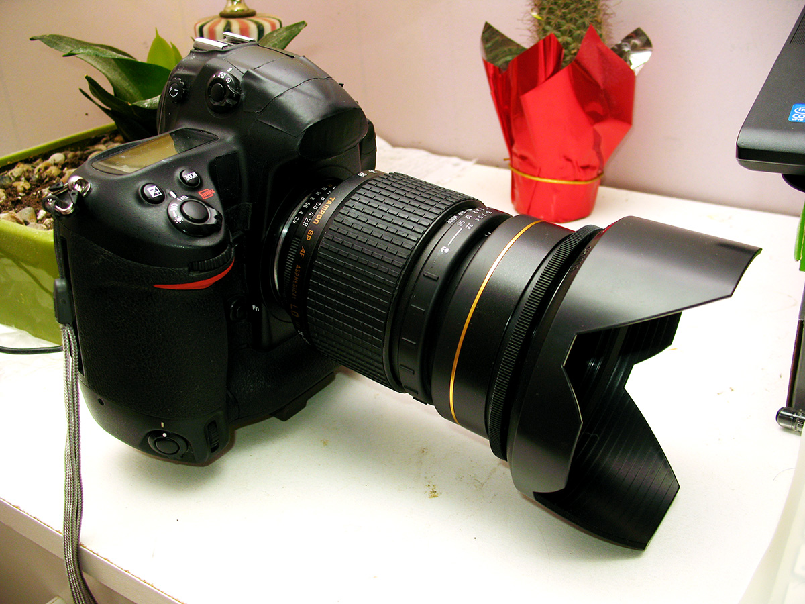
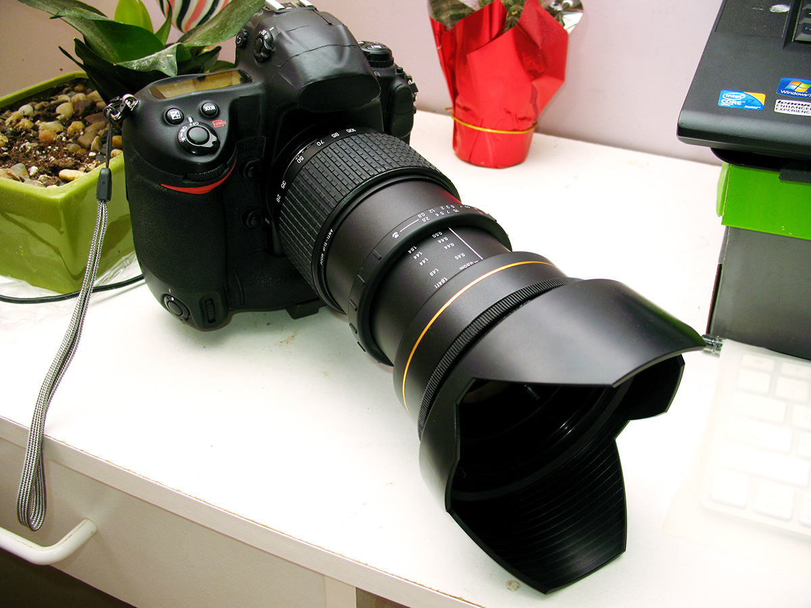
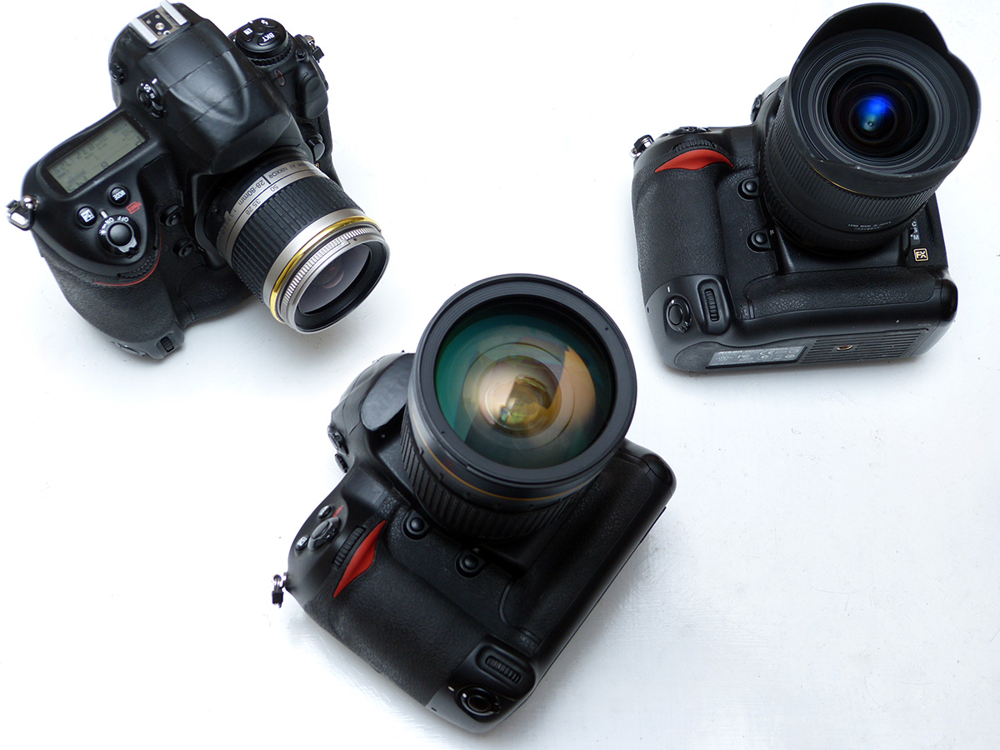

我用美能达2014-06-03 21:224.5 分
操作性 4.50耐用性 4.50性价比 5.00解像力 4.50色彩还原 4.00机械结构 4.50
我用美能达2014-03-25 21:00
siliconworm2013-07-06 22:42
siliconworm2013-07-06 22:21
siliconworm2013-07-06 20:28
siliconworm2012-07-02 08:174.17 分
操作性 5.00耐用性 5.00性价比 5.00解像力 3.00色彩还原 3.00机械结构 4.00



海滨幕张2011-12-27 13:404.42 分
操作性 4.50耐用性 4.50性价比 5.00解像力 4.00色彩还原 4.00机械结构 4.50
reitty2011-11-15 23:594.08 分
操作性 4.50耐用性 4.50性价比 4.00解像力 3.50色彩还原 4.00机械结构 4.00
wwwunix2011-11-02 14:354.17 分
操作性 4.50耐用性 4.50性价比 4.50解像力 3.50色彩还原 4.00机械结构 4.00